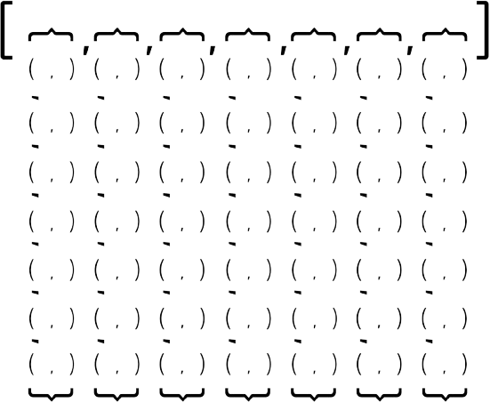
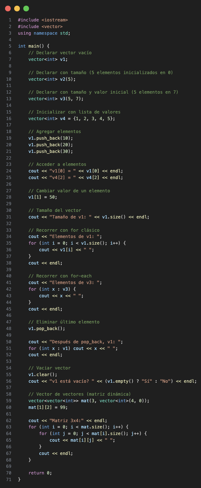
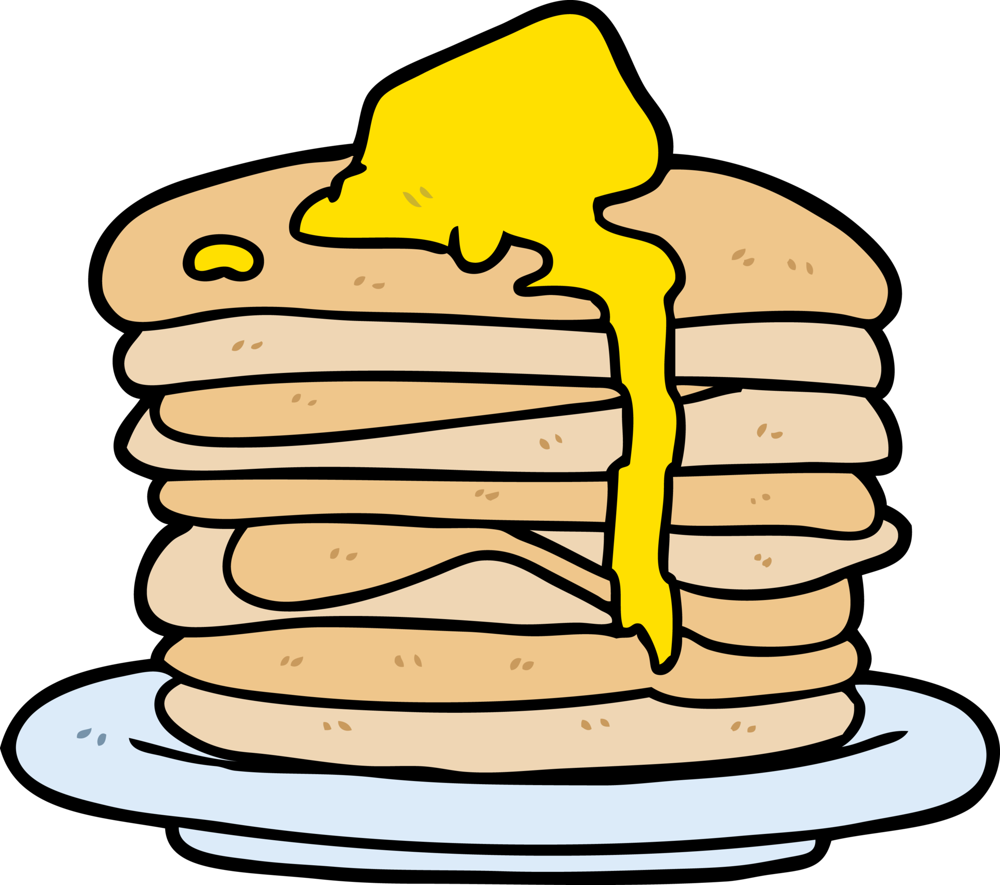
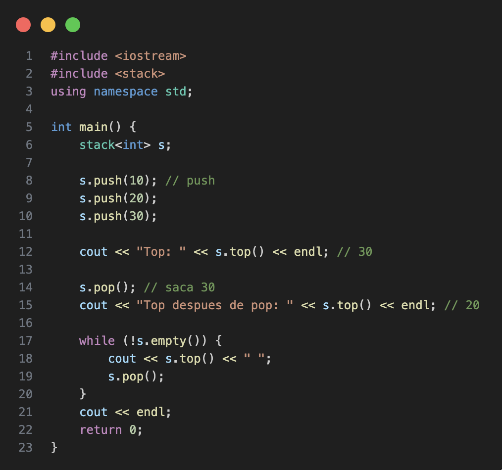

Data Structures and STL
Contents
Vector
There are a few collections in C++ that allow the programmer to work with simple linear collections of data: vector, list and array. Even so, vector is the preferred one by competitive programmers.
std::vector is known as a dynamic array, this means that, exactly as an array, internally it is a contiguous block of memory.
This allow us to access middle elements in constant time. That's basically why it is preferred. A good example of this is with pointer arithmetics, we can declare a pointer p pointing to the first memory location of an vector v and access to the i-th element of the vector with *(p + i) in constant time.
vector<int> v = {1,2,3}; int* p = &v[0];
So you can modify the vector through the pointer like: p[1] = 42; will be the same as doing: v[1] = 42.
And so you can modify k indexed position like: *(p + k), that would be the same as v[k].
Also it is called dynamic because it can change its size in execution time. When it needs more space, it allocates a new block of memory, copies the old elements to the new block and frees the old one. One thing to have in mind about this, is that, if you know the maximum size of your vector, you can reserve it since its declaration giving an argument to the constructor, like this: vector<int> v(1000); this will reserve space for 1000 elements, so it won't have to allocate more space in the future. Doing that you'll save time than if you do push_back() with every element you want.
As an extra tip, you can also give a second argument to the constructor to initialize all the elements of the vector with a specific value. For example, vector<int> v(1000, 0); will create a vector of size 1000 with all elements initialized to 0. This can be pretty useful during contests when you need to initialize a vector with a specific value in order to work with it later.
One thing to keep in mind is that the vector will not allocate more space than it needs, so if you want to add an element to the end of the vector, it will take amortized constant time, but if you want to add an element in the middle of the vector, it will take linear time because it has to move all the elements after that position. We have to ve careful with this, because if we are adding elements in the middle of the vector, it can take a lot of time, this is directly related to insert() and erase() functions.
One kind of problems requires to work with bidimensional arrays, grids or matrices. So we can use a vector of vectors declaring it like: vector<vector<int>> v(n, vector<int>(m,0)); where n is the number of rows and m is the number of columns. This will create a vector of size n with each element being a vector of size m initialized in 0.
The view of this vector of vector, but of pairs should be something like this:

And so a general overview of the vector usage can be seen in the following code, it could be useful to understand how valid sintaxis is used in C++:

Stack
The stack is one of the most known and used linear data structures.
It is a Last In First Out (LIFO) structure (or First In Last Out FILO).
Which means that the last element added to the stack will be the first one to be removed. Also, this means that the first element added to the stack will be the last one to be removed.
This can be confusing by hearing it just like that, but it is easier to understand if we think about it as a stack of something in real life.
For example, lets think about a stack of pancakes, when you have a pancake ready, you put it on the stack. With no choice, on the top of the stack. So, when you want to eat a pancake, you take the one on the top of the stack, which is the last one you put there. You cannot take the one on the bottom of the stack, because you have to take all the pancakes on top of it first. It would be a mess!

The stack implementation in C++ is done with std::stack class. And some of its general usage can be seen in the following code:

Queue
Queue is the second most known and used linear data structure.
It is a First In First Out (FIFO) structure (or Last In Last Out LILO).
This means tat the first element added to the queue will be the first one to be removed. Also, this means that the last element added to the queue will be the last one to be removed.
For undestanding purposes, we can think about it as a queue of people waiting for something, for example, at the supermarket. The first person to arrive to the queue will be the first one to be served, and the last person to arrive will be the last one to be served.

The queue implementation in C++ is done with std::queue class. And some of its general usage can be seen in the following code:
Pair
This class couples together a pair of values, which may be of different types. The individual values can be accessed through its public members first and second.
Pairs are a particular case of a tuple, which is a generalization of a pair to an arbitrary number of elements.
You can declare a pair like: pair<int, string> p; or pair<int, string> p = {1, "hello"}; or auto p = make_pair(1, "hello");.
You can access to its elements with p.first and p.second members.
And also you can use pairs inside of others data structures, such as vectors or maps. For example, a vector of pairs can be declared like: vector<pair<int, string>> v; and you can make pairs by putting both values you want to make a pair with inside a pair of keys, so you can work with it like: v.push_back({1,"one"});.
Tuple
A tuple is an object capable to hold a collection of elements. Each element can be of a different type.
You can declare a tuple like: tuple<int, string, double> t(1,"hello",3.14); or auto t = make_tuple(1, "hello", 3.14);.
You can access to its elements with get<0>(t), get<1>(t) and get<2>(t) functions.
As like pairs, you can use tuples inside of others data structures, such as vectors or maps. For example, a vector of tuples can be declared like: vector<tuple<int, string, double>> v; and you can make tuples by putting all the values you want to make a tuple with inside a pair of keys, so you can work with it like: v.push_back(make_tuple(1,"one",2.0)); or v.push_back({1,"one",2.0});.
We have used tuples with only three values, but you can use as many values as you want, just by adding more types to the tuple declaration.
Array
Arrays are fixed-size sequence containers: they hold a specific number of elements ordered in a strict linear sequence.
Internally, an array does not keep any data other than the elements it contains. It is as efficient in terms of storage size as an ordinary array declared with the languague's bracket sintax ([]).
Essentially, an array is a wrapper around a C-style array, which allows the use of STL algorithms and iterators. If you need to use a structure with various members of the same type, an array is a good choice even over a tuple, since it is more efficient in terms of memory usage and it is simplier to access to its elements.
You can declare an array like: array<int, 5> a = {1,2,3,4,5}; or array<int, 5> a; and then assign values to its elements like: a[0] = 1;.
You can access to its elements with a[0], a[1], a[2], etc.
Problems to practice!

Codeforces 5C - Longest Regular Bracket Sequence

Leetcode 20 - Valid Parentheses
Leetcode 2390 - Removing Stars From a String
Leetcode 738 - Daily Temperatures